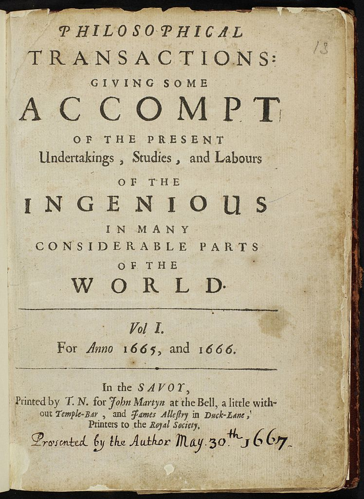
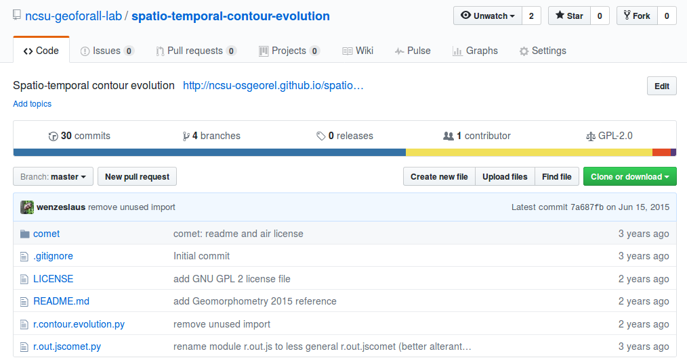

How to make your research reproducible
Vaclav (Vashek) Petras
NCSU
GeoForAll Lab
at the
Center for Geospatial Analytics
North Carolina State University
US-IALE, Baltimore
April 9-13, 2017
Science
Science existed before journal papers.Open Science
CC BY Stefan Janusz, Wikipedia
Open Science
- registration so that scientists get credit
- archiving so that we preserve knowledge for the future
- dissemination so that people can use this knowledge
- peer review so that we know it's worth it
Open Science
 [Buckheit and Donoho 1995, Peng 2011, Rodríguez-Sánchez et al. 2016, Marwick 2016]
[Buckheit and Donoho 1995, Peng 2011, Rodríguez-Sánchez et al. 2016, Marwick 2016]
Image credit: CC BY-SA Comtebenoit, Wikimedia
Scientists rely on software
It's impossible to conduct research without software, say 7 out of 10 UK researchers
— Hettrick et al, UK Research Software Survey 2014
Software needs to be shared
Software [...] developed as part of novel methods is as important for the method's implementation [...] Such software [...] must be made available to readers upon publication.
—Nature Methods - 4, 189 (2007)
doi:10.1038/nmeth0307-189
Screenshots


Scripting
Bashr.in.lidar input=points.las output=elevation -e
from grass.script import run_command
run_command("r.in.lidar", input="points.las", output="elevation", flags="e")
library(rgrass7)
execGRASS("r.in.lidar", input="points.las", output="elevation", flags="e")
Paper: PDF

Paper: Code
File versions

Revision control
Git
git commit script.py -m "replaced part of the main equation"
There are GUIs as well.
Collaborative writing: Overleaf

Text and code: Jupyter Notebook
- interactive document with text, code, and figures
- languages: Python, R, Bash, C, C++, Octave, ...
- alternatives: R Markdown (Notebook), Emacs Org-mode, ...

Publishing a model

Source code
Source code history
Documentation

Graphical user interface

Integration into a larger project
Do I want to create a new software project?- Preprocessing, visualization, and user interface (GUI, CLI, API)
- Integration with existing analytical tools
- Inputs, outputs, memory management

FUTURES model implemented as GRASS GIS modules
r.futures.pga, r.futures.demand, r.futures.parallelpga, ...
Alternatives: R package, Python package, QGIS plugin, ...
Running the code
- dependencies
- environment
Complete environment
| My laptop | Any computer | Docker | |
|---|---|---|---|
| What is required to recreate the study and run the software? | nothing* | text | text file |
| How are the dependencies handled? | ? | ? | specified |
Dockerfile
FROM ubuntu:16.04
RUN apt-get update
RUN apt-get install -y \
g++ \
python \
python-numpy \
...
Research publication
| Paper | background, methods, results, discussion | PDF, HTML |
| Environment | details about all dependencies and the code | Git, Docker |
| Specific code | scripts to perform the analyses | Bash, Python |
| Reusable code | methods as GRASS GIS modules | Python, C |
 Petras, V., D. J. Newcomb, and H. Mitasova.
Generalized 3D fragmentation index derived from lidar point clouds.
In: Open Geospatial Data, Software and Standards [in print]
Petras, V., D. J. Newcomb, and H. Mitasova.
Generalized 3D fragmentation index derived from lidar point clouds.
In: Open Geospatial Data, Software and Standards [in print]
Motivation
- Am I doing science to publish journal papers or to advance knowledge?
- What happens when I need to rerun an analysis from last year?
- How can my collaborators run and improve the code I'm running?
Next steps
- Publish R scripts with the next paper.
- Collaborate on code using Git.
- Collaborate on text using Overleaf.
- Use Jupyter Notebook for a report.
Like irreproducibility more?


{kind=link}
{kind=link}